Chapter Nine
RAY OPTICS AND OPTICAL INSTRUMENTS
RAY OPTICS AND OPTICAL INSTRUMENTS

Nature has endowed the human eye (retina) with the sensitivity to detect electromagnetic waves within a small range of the electromagnetic spectrum. Electromagnetic radiation belonging to this region of the spectrum (wavelength of about 400 nm to 750 nm) is called light. It is mainly through light and the sense of vision that we know and interpret the world around us.
There are two things that we can intuitively mention about light from common experience. First, that it travels with enormous speed and second, that it travels in a straight line. It took some time for people to realise that the speed of light is finite and measurable. Its presently accepted value in vacuum is c = 2.99792458 × 108 m s–1. For many purposes, it suffices to take c = 3 × 108 m s–1. The speed of light in vacuum is the highest speed attainable in nature.
The intuitive notion that light travels in a straight line seems to contradict what we have learnt in Chapter 8, that light is an electromagnetic wave of wavelength belonging to the visible part of the spectrum. How to reconcile the two facts? The answer is that the wavelength of light is very small compared to the size of ordinary objects that we encounter commonly (generally of the order of a few cm or larger). In this situation, as you will learn in Chapter 10, a light wave can be considered to travel from one point to another, along a straight line joining them. The path is called a ray of light, and a bundle of such rays constitutes a beam of light.
In this chapter, we consider the phenomena of reflection, refraction and dispersion of light, using the ray picture of light. Using the basic laws of reflection and refraction, we shall study the image formation by plane and spherical reflecting and refracting surfaces. We then go on to describe the construction and working of some important optical instruments, including the human eye.
Particle model of light
Newton’s fundamental contributions to mathematics, mechanics, and gravitation often blind us to his deep experimental and theoretical study of light. He made pioneering contributions in the field of optics. He further developed the corpuscular model of light proposed by Descartes. It presumes that light energy is concentrated in tiny particles called corpuscles. He further assumed that corpuscles of light were massless elastic particles. With his understanding of mechanics, he could come up with a simple model of reflection and refraction. It is a common observation that a ball bouncing from a smooth plane surface obeys the laws of reflection. When this is an elastic collision, the magnitude of the velocity remains the same. As the surface is smooth, there is no force acting parallel to the surface, so the component of momentum in this direction also remains the same. Only the component perpendicular to the surface, i.e., the normal component of the momentum, gets reversed in reflection. Newton argued that smooth surfaces like mirrors reflect the corpuscles in a similar manner.
In order to explain the phenomena of refraction, Newton postulated that the speed of the corpuscles was greater in water or glass than in air. However, later on it was discovered that the speed of light is less in water or glass than in air.
In the field of optics, Newton – the experimenter, was greater than Newton – the theorist. He himself observed many phenomena, which were difficult to understand in terms of particle nature of light. For example, the colours observed due to a thin film of oil on water. Property of partial reflection of light is yet another such example. Everyone who has looked into the water in a pond sees image of the face in it, but also sees the bottom of the pond. Newton argued that some of the corpuscles, which fall on the water, get reflected and some get transmitted. But what property could distinguish these two kinds of corpuscles? Newton had to postulate some kind of unpredictable, chance phenomenon, which decided whether an individual corpuscle would be reflected or not. In explaining other phenomena, however, the corpuscles were presumed to behave as if they are identical. Such a dilemma does not occur in the wave picture of light. An incoming wave can be divided into two weaker waves at the boundary between air and water.
We are familiar with the laws of reflection. The angle of reflection (i.e., the angle between reflected ray and the normal to the reflecting surface or the mirror) equals the angle of incidence (angle between incident ray and the normal). Also that the incident ray, reflected ray and the normal to the reflecting surface at the point of incidence lie in the same plane
(Fig. 9.1). These laws are valid at each point on any reflecting surface whether plane or curved. However, we shall restrict our discussion to the special case of curved surfaces, that is, spherical surfaces. The normal in this case is to be taken as normal to the tangent to surface at the point of incidence. That is, the normal is along the radius, the line joining the centre of curvature of the mirror to the point of incidence.
We have already studied that the geometric centre of a spherical mirror is called its pole while that of a spherical lens is called its optical centre. The line joining the pole and the centre of curvature of the spherical mirror is known as the principal axis. In the case of spherical lenses, the principal axis is the line joining the optical centre with its principal focus as you will see later.
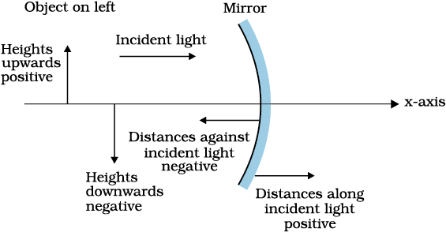
Figure 9.2 The Cartesian Sign Convention.
9.2.1 Sign convention
To derive the relevant formulae for reflection by spherical mirrors and refraction by spherical lenses, we must first adopt a sign convention for measuring distances. In this book, we shall follow the Cartesian sign convention. According to this convention, all distances are measured from the pole of the mirror or the optical centre of the lens. The distances measured in the same direction as the incident light are taken as positive and those measured in the direction opposite to the direction of incident light are taken as negative (Fig. 9.2). The heights measured upwards with respect to x-axis and normal to the principal axis (x-axis) of the mirror/lens are taken as positive (Fig. 9.2). The heights measured downwards are taken as negative.
With a common accepted convention, it turns out that a single formula for spherical mirrors and a single formula for spherical lenses can handle all different cases.
9.2.2 Focal length of spherical mirrors
Figure 9.3 shows what happens when a parallel beam of light is incident on (a) a concave mirror, and (b) a convex mirror. We assume that the rays are paraxial, i.e., they are incident at points close to the pole P of the mirror and make small angles with the principal axis. The reflected rays converge at a point F on the principal axis of a concave mirror [Fig. 9.3(a)].
For a convex mirror, the reflected rays appear to diverge from a point F on its principal axis [Fig. 9.3(b)]. The point F is called the principal focus of the mirror. If the parallel paraxial beam of light were incident, making some angle with the principal axis, the reflected rays would converge (or appear to diverge) from a point in a plane through F normal to the principal axis. This is called the focal plane of the mirror [Fig. 9.3(c)].
The distance between the focus F and the pole P of the mirror is called the focal length of the mirror, denoted by f. We now show that f = R/2, where R is the radius of curvature of the mirror. The geometry of reflection of an incident ray is shown in Fig. 9.4.
Figure 9.3 Focus of a concave and convex mirror.
Let C be the centre of curvature of the mirror. Consider a ray parallel to the principal axis striking the mirror at M. Then CM will be perpendicular to the mirror at M. Let θ be the angle of incidence, and MD be the perpendicular from M on the principal axis. Then,
∠MCP = θ and ∠MFP = 2θ
Now,
tanθ = and tan 2θ = 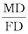 (9.1)
and tan 2θ = 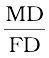 (9.1)
For small θ, which is true for paraxial rays, tanθ ≈ θ,
tan 2θ ≈ 2θ. Therefore, Eq. (9.1) gives
 = 2 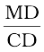
= 2 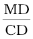
or, FD =  (9.2)
(9.2)
Now, for small θ, the point D is very close to the point P. Therefore, FD = f and CD = R. Equation (9.2) then gives
f = R/2 (9.3)
9.2.3 The mirror equation
Figure 9.4 Geometry of reflection of an incident ray on (a) concave spherical mirror, and (b) convex spherical mirror.
If rays emanating from a point actually meet at another point after reflection and/or refraction, that point is called the image of the first point. The image is real if the rays actually converge to the point; it is virtual if the rays do not actually meet but appear to diverge from the point when produced backwards. An image is thus a point-to-point correspondence with the object established through reflection and/or refraction.
Figure 9.5 Ray diagram for image formation by a concave mirror.
In principle, we can take any two rays emanating from a point on an object, trace their paths, find their point of intersection and thus, obtain the image of the point due to reflection at a spherical mirror. In practice, however, it is convenient to choose any two of the following rays:
(i) The ray from the point which is parallel to the principal axis. The reflected ray goes through the focus of the mirror.
(ii) The ray passing through the centre of curvature of a concave mirror or appearing to pass through it for a convex mirror. The reflected ray simply retraces the path.
(iii) The ray passing through (or directed towards) the focus of the concave mirror or appearing to pass through (or directed towards) the focus of a convex mirror. The reflected ray is parallel to the principal axis.
(iv) The ray incident at any angle at the pole. The reflected ray follows laws of reflection.
Figure 9.5 shows the ray diagram considering three rays. It shows the image A′B′ (in this case, real) of an object AB formed by a concave mirror. It does not mean that only three rays emanate from the point A. An infinite number of rays emanate from any source, in all directions. Thus, point A′ is image point of A if every ray originating at point A and falling on the concave mirror after reflection passes through the point A′.
We now derive the mirror equation or the relation between the object distance (u), image distance (v) and the focal length (f ).
From Fig. 9.5, the two right-angled triangles A′B′F and MPF are similar. (For paraxial rays, MP can be considered to be a straight line perpendicular to CP.) Therefore,

or  (PM = AB) (9.4)
(PM = AB) (9.4)
Since ∠ APB = ∠ A′PB′, the right angled triangles A′B′P and ABP are also similar. Therefore,
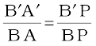 (9.5)
Comparing Eqs. (9.4) and (9.5), we get
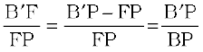 (9.6)
Equation (9.6) is a relation involving magnitude of distances. We now apply the sign convention. We note that light travels from the object to the mirror MPn. Hence this is taken as the positive direction. To reach the object AB, image A′B′ as well as the focus F from the pole P, we have to travel opposite to the direction of incident light. Hence, all the three will have negative signs. Thus,
B′ P = –v, FP = –f, BP = –u
Using these in Eq. (9.6), we get

or 
 (9.7)
(9.7)
This relation is known as the mirror equation.
The size of the image relative to the size of the object is another important quantity to consider. We define linear magnification (m) as the ratio of the height of the image (h′) to the height of the object (h):
m =  (9.8)
(9.8)
h and h′ will be taken positive or negative in accordance with the accepted sign convention. In triangles A′B′P and ABP, we have,

With the sign convention, this becomes
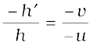
so that
m =  (9.9)
(9.9)
We have derived here the mirror equation, Eq. (9.7), and the magnification formula, Eq. (9.9), for the case of real, inverted image formed by a concave mirror. With the proper use of sign convention, these are,in fact, valid for all the cases of reflection by a spherical mirror (concave or convex) whether the image formed is real or virtual. Figure 9.6 shows the ray diagrams for virtual image formed by a concave and convex mirror. You should verify that Eqs. (9.7) and (9.9) are valid for these cases as well.
Example 9.1 Suppose that the lower half of the concave mirror’s reflecting surface in Fig. 9.5 is covered with an opaque (non-reflective) material. What effect will this have on the image of an object placed in front of the mirror?
Solution You may think that the image will now show only half of the object, but taking the laws of reflection to be true for all points of the remaining part of the mirror, the image will be that of the whole object. However, as the area of the reflecting surface has been reduced, the intensity of the image will be low (in this case, half).
Example 9.2 A mobile phone lies along the principal axis of a concave mirror, as shown in Fig. 9.7. Show by suitable diagram, the formation of its image. Explain why the magnification is not uniform. Will the distortion of image depend on the location of the phone with respect to the mirror?
Figure 9.7
Solution The ray diagram for the formation of the image of the phone is shown in Fig. 9.7. The image of the part which is on the plane perpendicular to principal axis will be on the same plane. It will be of the same size, i.e., B′C = BC. You can yourself realise why the image is distorted.
Example 9.3 An object is placed at (i) 10 cm, (ii) 5 cm in front of a concave mirror of radius of curvature 15 cm. Find the position, nature, and magnification of the image in each case.
Solution The focal length f = –15/2 cm = –7.5 cm
(i) The object distance u = –10 cm. Then Eq. (9.7) gives
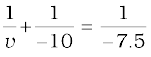
or 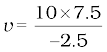 = – 30 cm
The image is 30 cm from the mirror on the same side as the object.
Also, magnification m = 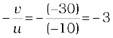
The image is magnified, real and inverted.
(ii) The object distance u = –5 cm. Then from Eq. (9.7),

or 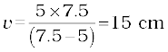
This image is formed at 15 cm behind the mirror. It is a virtual image.
Magnification m = 
The image is magnified, virtual and erect.
Example 9.4 Suppose while sitting in a parked car, you notice a jogger approaching towards you in the side view mirror of R = 2 m. If the jogger is running at a speed of 5 m s–1, how fast the image of the jogger appear to move when the jogger is (a) 39 m, (b) 29 m, (c) 19 m, and (d) 9 m away.
Solution From the mirror equation, Eq. (9.7), we get
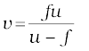
For convex mirror, since R = 2 m, f = 1 m. Then
for u = –39 m, 
Since the jogger moves at a constant speed of 5 m s–1, after 1 s the position of the image v (for u = –39 + 5 = –34) is (34/35 )m.
The shift in the position of image in 1 s is

Therefore, the average speed of the image when the jogger is between
39 m and 34 m from the mirror, is (1/280) m s–1
Similarly, it can be seen that for u = –29 m, –19 m and –9 m, the speed with which the image appears to move is
 respectively.
respectively.
Although the jogger has been moving with a constant speed, the speed of his/her image appears to increase substantially as he/she moves closer to the mirror. This phenomenon can be noticed by any person sitting in a stationary car or a bus. In case of moving vehicles, a similar phenomenon could be observed if the vehicle in the rear is moving closer with a constant speed.
When a beam of light encounters another transparent medium, a part of light gets reflected back into the first medium while the rest enters the other. A ray of light represents a beam. The direction of propagation of an obliquely incident ray of light that enters the other medium, changes at the interface of the two media. This phenomenon is called refraction of light. Snell experimentally obtained the following laws of refraction:
(i) The incident ray, the refracted ray and the normal to the interface at the point of incidence, all lie in the same plane.
(ii) The ratio of the sine of the angle of incidence to the sine of angle of refraction is constant. Remember that the angles of incidence (i ) and refraction (r ) are the angles that the incident and its refracted ray make with the normal, respectively. We have
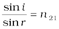 (9.10)
where n21 is a constant, called the refractive index of the second medium with respect to the first medium. Equation (9.10) is the well-known Snell’s law of refraction. We note that n21 is a characteristic of the pair of media (and also depends on the wavelength of light), but is independent of the angle of incidence.
Figure 9.8 Refraction and reflection of light.
From Eq. (9.10), if n21 > 1, r < i, i.e., the refracted ray bends towards the normal. In such a case medium 2 is said to be optically denser (or denser, in short) than medium 1. On the other hand, if n21 <1, r > i, the refracted ray bends away from the normal. This is the case when incident ray in a denser medium refracts into a rarer medium.
Note: Optical density should not be confused with mass density, which is mass per unit volume. It is possible that mass density of an optically denser medium may be less than that of an optically rarer medium (optical density is the ratio of the speed of light in two media). For example, turpentine and water. Mass density of turpentine is less than that of water but its optical density is higher.
If n21 is the refractive index of medium 2 with respect to medium 1 and n12 the refractive index of medium 1 with respect to medium 2, then it should be clear that
 (9.11)
(9.11)
It also follows that if n32 is the refractive index of medium 3 with respect to medium 2 then n32 = n31 × n12, where n31 is the refractive index of medium 3 with respect to medium 1.
Figure 9.9 Lateral shift of a ray refracted through a parallel-sided slab.
Some elementary results based on the laws of refraction follow immediately. For a rectangular slab, refraction takes place at two interfaces (air-glass and glass-air). It is easily seen from Fig. 9.9 that r2 = i1, i.e., the emergent ray is parallel to the incident ray—there is no deviation, but it does suffer lateral displacement/shift with respect to the incident ray. Another familiar observation is that the bottom of a tank filled with water appears to be raised (Fig. 9.10). For viewing near the normal direction, it can be shown that the apparent depth, (h1) is real depth (h2) divided by the refractive index of the medium (water).
The refraction of light through the atmosphere is responsible for many interesting phenomena. For example, the sun is visible a little before the actual sunrise and until a little after the actual sunset due to refraction of light through the atmosphere (Fig. 9.11). By actual sunrise we mean the actual crossing of the horizon by the sun. Figure 9.11 shows the actual and apparent positions of the sun with respect to the horizon. The figure is highly exaggerated to show the effect. The refractive index of air with respect to vacuum is 1.00029. Due to this, the apparent shift in the direction of the sun is by about half a degree and the corresponding time difference between actual sunset and apparent sunset is about 2 minutes (see Example 9.5). The apparent flattening (oval shape) of the sun at sunset and sunrise is also due to the same phenomenon.
Example 9.5 The earth takes 24 h to rotate once about its axis. How much time does the sun take to shift by 1º when viewed from
the earth?
Solution
Time taken for 360° shift = 24 h
Time taken for 1° shift = 24/360 h = 4 min.
When light travels from an optically denser medium to a rarer medium at the interface, it is partly reflected back into the same medium and partly refracted to the second medium. This reflection is called the internal reflection.
When a ray of light enters from a denser medium to a rarer medium, it bends away from the normal, for example, the ray AO1 B in Fig. 9.12. The incident ray AO1 is partially reflected (O1C) and partially transmitted (O1B) or refracted, the angle of refraction (r) being larger than the angle of incidence (i). As the angle of incidence increases, so does the angle of refraction, till for the ray AO3, the angle of refraction is π/2. The refracted ray is bent so much away from the normal that it grazes the surface at the interface between the two media. This is shown by the ray AO3 D in Fig. 9.12. If the angle of incidence is increased still further (e.g., the ray AO4), refraction is not possible, and the incident ray is totally reflected. This is called total internal reflection. When light gets reflected by a surface, normally some fraction of it gets transmitted. The reflected ray, therefore, is always less intense than the incident ray, howsoever smooth the reflecting surface may be. In total internal reflection, on the other hand, no transmission of light takes place.
The drowning child, lifeguard and Snell’s law
Consider a rectangular swimming pool PQSR; see figure here. A lifeguard sitting at G outside the pool notices a child drowning at a point C.
The guard wants to reach the child in the shortest possible time. Let SR be the side of the pool between G and C. Should he/she take a straight line path GAC between G and C or GBC in which the path BC in water would be the shortest, or some other path GXC? The guard knows that his/her running speed v1 on ground is higher than his/her swimming speed v2.
Suppose the guard enters water at X. Let GX =l1 and XC =l2. Then the time taken to reach from G to C would be
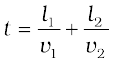
To make this time minimum, one has to differentiate it (with respect to the coordinate of X) and find the point X when t is a minimum. On doing all this algebra (which we skip here), we find that the guard should enter water at a point where Snell’s law is satisfied. To understand this, draw a perpendicular LM to side SR at X. Let ∠GXM = i and ∠CXL = r. Then it can be seen that t is minimum when
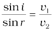
In the case of light v1/v2, the ratio of the velocity of light in vacuum to that in the medium, is the refractive index n of the medium.
In short, whether it is a wave or a particle or a human being, whenever two mediums and two velocities are involved, one must follow Snell’s law if one wants to take the shortest time.
The angle of incidence corresponding to an angle of refraction 90º, say ∠AO3N, is called the critical angle (ic ) for the given pair of media. We see from Snell’s law [Eq. (9.10)] that if the relative refractive index is less than one then, since the maximum value
of sin r is unity, there is an upper limit
to the value of sin i for which the law can be satisfied, that is, i = ic
such that
sin ic = n21 (9.12)
For values of i larger than ic, Snell’s law of refraction cannot be satisfied, and hence no refraction is possible.
Figure 9.12 Refraction and internal reflection of rays from a point A in the denser medium (water) incident at different angles at the interface with a rarer medium (air).
The refractive index of denser medium 1 with respect to rarer medium 2 will be n12 = 1/sinic. Some typical critical angles are listed in Table 9.1.
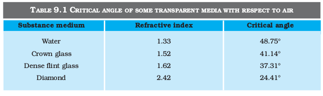
All optical phenomena can be demonstrated very easily with the use of a laser torch or pointer, which is easily available nowadays. Take a glass beaker with clear water in it. Stir the water a few times with a piece of soap, so that it becomes a little turbid. Take a laser pointer and shine its beam through the turbid water. You will find that the path of the beam inside the water shines brightly.
Shine the beam from below the beaker such that it strikes at the upper water surface at the other end. Do you find that it undergoes partial reflection (which is seen as a spot on the table below) and partial refraction [which comes out in the air and is seen as a spot on the roof; Fig. 9.13(a)]? Now direct the laser beam from one side of the beaker such that it strikes the upper surface of water more obliquely [Fig. 9.13(b)]. Adjust the direction of laser beam until you find the angle for which the refraction above the water surface is totally absent and the beam is totally reflected back to water. This is total internal reflection at its simplest.
Pour this water in a long test tube and shine the laser light from top, as shown in Fig. 9.13(c). Adjust the direction of the laser beam such that it is totally internally reflected every time it strikes the walls of the tube. This is similar to what happens in optical fibres.
Take care not to look into the laser beam directly and not to point it at anybody’s face.
9.4.1 Total internal reflection in nature and its technological applications
(i) Mirage: On hot summer days, the air near the ground becomes hotter than the air at higher levels. The refractive index of air increases with its density. Hotter air is less dense, and has smaller refractive index than the cooler air. If the air currents are small, that is, the air is still, the optical density at different layers of air increases with height. As a result, light from a tall object such as a tree, passes through a medium whose refractive index decreases towards the ground. Thus, a ray of light from such an object successively bends away from the normal and undergoes total internal reflection, if the angle of incidence for the air near the ground exceeds the critical angle. This is shown in Fig. 9.14(b). To a distant observer, the light appears to be coming from somewhere below the ground. The observer naturally assumes that light is being reflected from the ground, say, by a pool of water near the tall object. Such inverted images of distant tall objects cause an optical illusion to the observer. This phenomenon is called mirage. This type of mirage is especially common in hot deserts. Some of you might have noticed that while moving in a bus or a car during a hot summer day, a distant patch of road, especially on a highway, appears to be wet. But, you do not find any evidence of wetness when you reach that spot. This is also due to mirage.
(ii) Diamond: Diamonds are known for their spectacular brilliance.
Figure 9.14 (a) A tree is seen by an observer at its place when the air above the ground is at uniform temperature, (b) When the layers of air close to the ground have varying temperature with hottest layers near the ground, light from a distant tree may undergo total internal reflection, and the apparent image of the tree may create an illusion to the observer that the tree is near a pool of water.
Their brilliance is mainly due to the total internal reflection of light inside them. The critical angle for diamond-air interface (≅ 24.4°) is very small, therefore once light enters a diamond, it is very likely to undergo total internal reflection inside it. Diamonds found in nature rarely exhibit the brilliance for which they are known. It is the technical skill of a diamond cutter which makes diamonds to sparkle so brilliantly. By cutting the diamond suitably, multiple total internal reflections can be made
to occur.
(iii) Prism: Prisms designed to bend light by 90º or by 180º make use of total internal reflection [Fig. 9.15(a) and (b)]. Such a prism is also used to invert images without changing their size [Fig. 9.15(c)].
In the first two cases, the critical angle ic for the material of the prism must be less than 45º. We see from Table 9.1 that this is true for both crown glass and dense flint glass.
(iv) Optical fibres: Now-a-days optical fibres are extensively used for transmitting audio and video signals through long distances. Optical fibres too make use of the phenomenon of total internal reflection. Optical fibres are fabricated with high quality composite glass/quartz fibres. Each fibre consists of a core and cladding. The refractive index of the material of the core is higher than that of the cladding.
When a signal in the form of light is directed at one end of the fibre at a suitable angle, it undergoes repeated total internal reflections along the length of the fibre and finally comes out at the other end (Fig. 9.16). Since light undergoes total internal reflection at each stage, there is no appreciable loss in the intensity of the light signal. Optical fibres are fabricated such that light reflected at one side of inner surface strikes the other at an angle larger than the critical angle. Even if the fibre is bent, light can easily travel along its length. Thus, an optical fibre can be used to act as an optical pipe.
A bundle of optical fibres can be put to several uses. Optical fibres are extensively used for transmitting and receiving electrical signals which are converted to light by suitable transducers. Obviously, optical fibres can also be used for transmission of optical signals. For example, these are used as a ‘light pipe’ to facilitate visual examination of internal organs like esophagus, stomach and intestines. You might have seen a commonly available decorative lamp with fine plastic fibres with their free ends forming a fountain like structure. The other end of the fibres is fixed over an electric lamp. When the lamp is switched on, the light travels from the bottom of each fibre and appears at the tip of its free end as a dot of light. The fibres in such decorative lamps are optical fibres.
The main requirement in fabricating optical fibres is that there should be very little absorption of light as it travels for long distances inside them. This has been achieved by purification and special preparation of materials such as quartz. In silica glass fibres, it is possible to transmit more than 95% of the light over a fibre length of 1 km. (Compare with what you expect for a block of ordinary window glass 1 km thick.)
We have so far considered refraction at a plane interface. We shall now consider refraction at a spherical interface between two transparent media. An infinitesimal part of a spherical surface can be regarded as planar and the same laws of refraction can be applied at every point on the surface. Just as for reflection by a spherical mirror, the normal at the point of incidence is perpendicular to the tangent plane to the spherical surface at that point and, therefore, passes through its centre of curvature. We first consider refraction by a single spherical surface and follow it by thin lenses. A thin lens is a transparent optical medium bounded by two surfaces; at least one of which should be spherical. Applying the formula for image formation by a single spherical surface successively at the two surfaces of a lens, we shall obtain the lens maker’s formula and then the lens formula.
9.5.1 Refraction at a spherical surface
Figure 9.17 shows the geometry of formation of image I of an object O on the principal axis of a spherical surface with centre of curvature C, and radius of curvature R. The rays are incident from a medium of refractive index n1, to another of refractive index n2. As before, we take the aperture (or the lateral size) of the surface to be small compared to other distances involved, so that small angle approximation can be made. In particular, NM will be taken to be nearly equal to the length of the perpendicular from the point N on the principal axis. We have, for small angles,
tan ∠NOM = 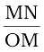
tan ∠NCM = 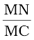
tan ∠NIM = 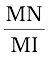
Now, for ∆NOC, i is the exterior angle. Therefore, i = ∠NOM + ∠NCM
i =  (9.13)
(9.13)
Similarly,
r = ∠NCM – ∠NIM
i.e., r =  (9.14)
(9.14)
Now, by Snell’s law
n1 sin i = n2 sin r
or for small angles
n1i = n2r
Substituting i and r from Eqs. (9.13) and (9.14), we get
 (9.15)
(9.15)
Here, OM, MI and MC represent magnitudes of distances. Applying the Cartesian sign convention,
Light sources and photometry
It is known that a body above absolute zero temperature emits electromagnetic radiation. The wavelength region in which the body emits the radiation depends on its absolute temperature. Radiation emitted by a hot body, for example, a tungsten filament lamp having temperature 2850 K are partly invisible and mostly in infrared (or heat) region. As the temperature of the body increases radiation emitted by it is in visible region. The sun with temperature of about 5500 K emits radiation whose energy versus wavelength graph peaks approximately at 550 nm corresponding to green light and is almost in the middle of the visible region. The energy versus wavelength distribution graph for a given body peaks at some wavelength, which is inversely proportional to the absolute temperature of that body.
The measurement of light as perceived by human eye is called photometry. Photometry is measurement of a physiological phenomenon, being the stimulus of light as received by the human eye, transmitted by the optic nerves and analysed by the brain. The main physical quantities in photometry are (i) the luminous intensity of the source, (ii) the luminous flux or flow of light from the source, and (iii) illuminance of the surface. The SI unit of luminous intensity (I) is candela (cd). The candela is the luminous intensity, in a given direction, of a source that emits monochromatic radiation of frequency 540 × 1012 Hz and that has a radiant intensity in that direction of 1/683 watt per steradian. If a light source emits one candela of luminous intensity into a solid angle of one steradian, the total luminous flux emitted into that solid angle is one lumen (lm). A standard 100 watt incadescent light bulb emits approximately 1700 lumens.
In photometry, the only parameter, which can be measured directly is illuminance. It is defined as luminous flux incident per unit area on a surface (lm/m2 or lux). Most light meters measure this quantity. The illuminance E, produced by a source of luminous intensity I, is given by E = I/r2, where r is the normal distance of the surface from the source. A quantity named luminance (L), is used to characterise the brightness of emitting or reflecting flat surfaces. Its unit is cd/m2 (sometimes called ‘nit’ in industry) . A good LCD computer monitor has a brightness of about 250 nits.
OM = –u, MI = +v, MC = +R
Substituting these in Eq. (9.15), we get
 (9.16)
(9.16)
Equation (9.16) gives us a relation between object and image distance in terms of refractive index of the medium and the radius of curvature of the curved spherical surface. It holds for any curved spherical surface.
Example 9.6 Light from a point source in air falls on a spherical glass surface (n = 1.5 and radius of curvature = 20 cm). The distance of the light source from the glass surface is 100 cm. At what position the image is formed?
Solution
We use the relation given by Eq. (9.16). Here
u = – 100 cm, v = ?, R = + 20 cm, n1 = 1, and n2 = 1.5.
We then have
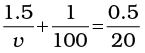
or v = +100 cm
The image is formed at a distance of 100 cm from the glass surface, in the direction of incident light.
9.5.2 Refraction by a lens
Figure 9.18(a) shows the geometry of image formation by a double convex lens. The image formation can be seen in terms of two steps:
(i) The first refracting surface forms the image I1 of the object O
[Fig. 9.18(b)]. The image I1 acts as a virtual object for the second surface that forms the image at I [Fig. 9.18(c)]. Applying Eq. (9.15) to the first interface ABC, we get
 (9.17)
(9.17)
A similar procedure applied to the second interface* ADC gives,
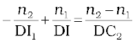 (9.18)
* Note that now the refractive index of the medium on the right side of ADC is n1 while on its left it is n2. Further DI1 is negative as the distance is measured against the direction of incident light.
For a thin lens, BI1 = DI1. Adding
Eqs. (9.17) and (9.18), we get
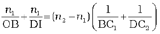 (9.19)
Suppose the object is at infinity, i.e.,
OB → ∞ and DI = f, Eq. (9.19) gives
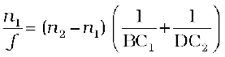 (9.20)
The point where image of an object placed at infinity is formed is called the focus F, of the lens and the distance f gives its focal length. A lens has two foci, F and F′, on either side of it (Fig. 9.19). By the sign convention,
BC1 = + R1,
DC2 = –R2
So Eq. (9.20) can be written as
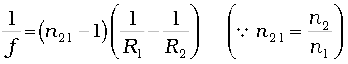 (9.21)
Equation (9.21) is known as the lens maker’s formula. It is useful to design lenses of desired focal length using surfaces of suitable radii of curvature. Note that the formula is true for a concave lens also. In that case R1is negative, R2 positive and therefore, f is negative.
From Eqs. (9.19) and (9.20), we get
 (9.22)
(9.22)
Again, in the thin lens approximation, B and D are both close to the optical centre of the lens. Applying the sign convention,
BO = – u, DI = +v, we get
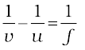 (9.23)
Equation (9.23) is the familiar thin lens formula. Though we derived it for a real image formed by a convex lens, the formula is valid for both convex as well as concave lenses and for both real and virtual images.
It is worth mentioning that the two foci, F and F′, of a double convex or concave lens are equidistant from the optical centre. The focus on the side of the (original) source of light is called the first focal point, whereas the other is called the second focal point.
To find the image of an object by a lens, we can, in principle, take any two rays emanating from a point on an object; trace their paths using the laws of refraction and find the point where the refracted rays meet (or appear to meet). In practice, however, it is convenient to choose any two of the following rays:
(i) A ray emanating from the object parallel to the principal axis of the lens after refraction passes through the second principal focus F′ (in a convex lens) or appears to diverge (in a concave lens) from the first principal focus F.
(ii) A ray of light, passing through the optical centre of the lens, emerges without any deviation after refraction.
(iii) A ray of light passing through the first principal focus (for a convex lens) or appearing to meet at it (for a concave lens) emerges parallel to the principal axis after refraction.
Figures 9.19(a) and (b) illustrate these rules for a convex and a concave lens, respectively. You should practice drawing similar ray diagrams for different positions of the object with respect to the lens and also verify that the lens formula, Eq. (9.23), holds good for all cases.
Here again it must be remembered that each point on an object gives out infinite number of rays. All these rays will pass through the same image point after refraction at the lens.
Magnification (m) produced by a lens is defined, like that for a mirror, as the ratio of the size of the image to that of the object. Proceeding in the same way as for spherical mirrors, it is easily seen that for a lens
m =  =
=  (9.24)
(9.24)
When we apply the sign convention, we see that, for erect (and virtual) image formed by a convex or concave lens, m is positive, while for an inverted (and real) image, m is negative.
Example 9.7 A magician during a show makes a glass lens with
n = 1.47 disappear in a trough of liquid. What is the refractive index of the liquid? Could the liquid be water?
Solution
The refractive index of the liquid must be equal to 1.47 in order to make the lens disappear. This means n1 = n2.. This gives 1/f =0 or
f → ∞. The lens in the liquid will act like a plane sheet of glass. No, the liquid is not water. It could be glycerine.
9.5.3 Power of a lens
Power of a lens is a measure of the convergence or divergence, which a lens introduces in the light falling on it. Clearly, a lens of shorter focal length bends the incident light more, while converging it in case of a convex lens and diverging it in case of a concave lens. The power P of a lens is defined as the tangent of the angle by which it converges or diverges a beam of light falling at unit distant from the optical centre (Fig. 9.20).
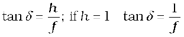 or 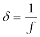 for small value of δ. Thus,
P = 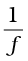 (9.25)
The SI unit for power of a lens is dioptre (D): 1D = 1m–1. The power of a lens of focal length of 1 metre is one dioptre. Power of a lens is positive for a converging lens and negative for a diverging lens. Thus, when an optician prescribes a corrective lens of power + 2.5 D, the required lens is a convex lens of focal length + 40 cm. A lens of power of – 4.0 D means a concave lens of focal length – 25 cm.
Figure 9.20 Power of a lens.
Example 9.8 (i) If f = 0.5 m for a glass lens, what is the power of the lens? (ii) The radii of curvature of the faces of a double convex lens are 10 cm and 15 cm. Its focal length is 12 cm. What is the refractive index of glass? (iii) A convex lens has 20 cm focal length in air. What is focal length in water? (Refractive index of air-water = 1.33, refractive index for air-glass = 1.5.)
Solution
(i) Power = +2 dioptre.
(ii) Here, we have f = +12 cm, R1 = +10 cm, R2 = –15 cm.
Refractive index of air is taken as unity.
We use the lens formula of Eq. (9.22). The sign convention has to be applied for f, R1 and R2.
Substituting the values, we have

This gives n = 1.5.
(iii) For a glass lens in air, n2 = 1.5, n1 = 1, f = +20 cm. Hence, the lens formula gives
For the same glass lens in water, n2 = 1.5, n1 = 1.33. Therefore,
(9.26)
Combining these two equations, we find f = + 78.2 cm.
9.5.4 Combination of thin lenses in contact
Consider two lenses A and B of focal length f1 and f2 placed in contact with each other. Let the object be placed at a point O beyond the focus of the first lens A (Fig. 9.21). The first lens produces an image at I1. Since image I1 is real, it serves as a virtual object for the second lens B, producing the final image at I. It must, however, be borne in mind that formation of image by the first lens is presumed only to facilitate determination of the position of the final image. In fact, the direction of rays emerging from the first lens gets modified in accordance with the angle at which they strike the second lens. Since the lenses are thin, we assume the optical centres of the lenses to be coincident. Let this central point be denoted by P.
For the image formed by the first lens A, we get
(9.27)
For the image formed by the second lens B, we get
 (9.28)
(9.28)
Adding Eqs. (9.27) and (9.28), we get
(9.29)
If the two lens-system is regarded as equivalent to a single lens of focal length f, we have

so that we get
(9.30)
Figure 9.21 Image formation by a combination of two thin lenses in contact.
The derivation is valid for any number of thin lenses in contact. If several thin lenses of focal length f1, f2, f3,... are in contact, the effective focal length of their combination is given by
 … (9.31)
… (9.31)
In terms of power, Eq. (9.31) can be written as
P = P1 + P2 + P3 + … (9.32)
where P is the net power of the lens combination. Note that the sum in Eq. (9.32) is an algebraic sum of individual powers, so some of the terms on the right side may be positive (for convex lenses) and some negative (for concave lenses). Combination of lenses helps to obtain diverging or converging lenses of desired magnification. It also enhances sharpness of the image. Since the image formed by the first lens becomes the object for the second, Eq. (9.25) implies that the total magnification m of the combination is a product of magnification (m1, m2, m3,...) of individual lenses
m = m1 m2 m3 ... (9.33)
Such a system of combination of lenses is commonly used in designing lenses for cameras, microscopes, telescopes and other optical instruments.
Example 9.9 Find the position of the image formed by the lens combination given in the Fig. 9.22.
Figure 9.22
Solution Image formed by the first lens
or v1 = 15 cm
The image formed by the first lens serves as the object for the second. This is at a distance of (15 – 5) cm = 10 cm to the right of the second lens. Though the image is real, it serves as a virtual object for the second lens, which means that the rays appear to come from it for the second lens.
or v2 = ∞
The virtual image is formed at an infinite distance to the left of the second lens. This acts as an object for the third lens.
or
or v3 = 30 cm
The final image is formed 30 cm to the right of the third lens.
Figure 9.23 shows the passage of light through a triangular prism ABC. The angles of incidence and refraction at the first face AB are i and r1, while the angle of incidence (from glass to air) at the second face AC is r2 and the angle of refraction or emergence e. The angle between the emergent ray RS and the direction of the incident ray PQ is called the angle of deviation, δ.
In the quadrilateral AQNR, two of the angles (at the vertices Q and R) are right angles. Therefore, the sum of the other angles of the quadrilateral is 180º.
∠A + ∠QNR = 180º
From the triangle QNR,
r1 + r2 + ∠QNR = 180º
Comparing these two equations, we get
r1 + r2 = A (9.34)
The total deviation δ is the sum of deviations at the two faces,
δ = (i – r1 ) + (e – r2 )
that is,
δ = i + e – A (9.35)
Thus, the angle of deviation depends on the angle of incidence. A plot between the angle of deviation and angle of incidence is shown in Fig. 9.24.

Figure 9.23 A ray of light passing through a triangular glass prism.
You can see that, in general, any given value of δ, except for i = e, corresponds to two values i and hence of e. This, in fact, is expected from the symmetry of i and e in Eq. (9.35), i.e., δ remains the same if i and e are interchanged. Physically, this is related to the fact that the path of ray in Fig. 9.23 can be traced back, resulting in the same angle of deviation. At the minimum deviation Dm, the refracted ray inside the prism becomes parallel to its base. We have
δ = Dm, i = e which implies r1 = r2.
Equation (9.34) gives
2r = A or r =  (9.36)
(9.36)
In the same way, Eq. (9.35) gives
Dm = 2i – A, or i = (A + Dm)/2 (9.37)
The refractive index of the prism is
(9.38)
The angles A and Dm can be measured experimentally. Equation (9.38) thus provides a method of determining refractive index of the material of the prism.
For a small angle prism, i.e., a thin prism, Dm is also very small, and we get
Dm = (n21–1)A
It implies that, thin prisms do not deviate light much.
Figure 9.24 Plot of angle of deviation (δ) versus angle of incidence (i) for a
triangular prism.
It has been known for a long time that when a narrow beam of sunlight, usually called white light, is incident on a glass prism, the emergent light is seen to be consisting of several colours. There is actually a continuous variation of colour, but broadly, the different component colours that appear in sequence are: violet, indigo, blue, green, yellow, orange and red (given by the acronym VIBGYOR). The red light bends the least, while the violet light bends the most (Fig. 9.25).
The phenomenon of splitting of light into its component colours is known as dispersion. The pattern of colour components of light is called the spectrum of light. The word spectrum is now used in a much more general sense: we discussed in Chapter 8 the electro- magnetic spectrum over the large range of wavelengths, from γ-rays to radio waves, of which the spectrum of light (visible spectrum) is only a small part.
Though the reason for appearance of spectrum is now common knowledge, it was a matter of much debate in the history of physics. Does the prism itself create colour in some way or does it only separate the colours already present in white light?
Figure 9.25 Dispersion of sunlight or white light on passing through a glass prism. The relative deviation of different colours shown is highly exaggerated.
In a classic experiment known for its simplicity but great significance, Isaac Newton settled the issue once for all. He put another similar prism, but in an inverted position, and let the emergent beam from the first prism fall on the second prism (Fig. 9.26). The resulting emergent beam was found to be white light. The explanation was clear— the first prism splits the white light into its component colours, while the inverted prism recombines them to give white light. Thus, white light itself consists of light of different colours, which are separated by the prism.
It must be understood here that a ray of light, as defined mathematically, does not exist. An actual ray is really a beam of many rays of light. Each ray splits into component colours when it enters the glass prism. When those coloured rays come out on the other side, they again produce a white beam.
We now know that colour is associated with wavelength of light. In the visible spectrum, red light is at the long wavelength end (~700 nm) while the violet light is at the short wavelength end (~ 400 nm). Dispersion takes place because the refractive index of medium for different wavelengths (colours) is different. For example, the bending of red component of white light is least while it is most for the violet. Equivalently, red light travels faster than violet light in a glass prism. Table 9.2 gives the refractive indices for different wavelength for crown glass and flint glass. Thick lenses could be assumed as made of many prisms, therefore, thick lenses show chromatic aberration due to dispersion of light.
The variation of refractive index with wavelength may be more pronounced in some media than the other. In vacuum, of course, the speed of light is independent of wavelength. Thus, vacuum (or air approximately) is a non-dispersive medium in which all colours travel with the same speed. This also follows from the fact that sunlight reaches us in the form of white light and not as its components. On the other hand, glass is a dispersive medium.
The interplay of light with things around us gives rise to several beautiful phenomena. The spectacle of colour that we see around us all the time is possible only due to sunlight. The blue of the sky, white clouds, the red-hue at sunrise and sunset, the rainbow, the brilliant colours of some pearls, shells, and wings of birds, are just a few of the natural wonders we are used to. We describe some of them here from the point of view of physics.
9.8.1 The rainbow
The rainbow is an example of the dispersion of sunlight by the water drops in the atmosphere. This is a phenomenon due to combined effect of dispersion, refraction and reflection of sunlight by spherical water droplets of rain. The conditions for observing a rainbow are that the sun should be shining in one part of the sky (say near western horizon) while it is raining in the opposite part of the sky (say eastern horizon).
An observer can therefore see a rainbow only when his back is towards the sun.
In order to understand the formation of rainbows, consider Fig. (9.27(a). Sunlight is first refracted as it enters a raindrop, which causes the different wavelengths (colours) of white light to separate. Longer wangelength of light (red) are bent the least while the shorter wavelength (violet) are bent the most. Next, these component rays strike the inner surface of the water drop and get internally reflected if the angle between the refracted ray and normal to the drop surface is greater then the critical angle (48º, in this case). The reflected light is refracted again as it comes out of the drop as shown in the figure. It is found that the violet light emerges at an angle of 40º related to the incoming sunlight and red light emerges at an angle of 42º. For other colours, angles lie in between these two values.
Figure 9.27(b) explains the formation of primary rainbow. We see that red light from drop 1 and violet light from drop 2 reach the observers eye. The violet from drop 1 and red light from drop 2 are directed at level above or below the observer. Thus the observer sees a rainbow with red colour on the top and violet on the bottom. Thus, the primary rainbow is a result of three-step process, that is, refraction, reflection and refraction.
When light rays undergoes two internal reflections inside a raindrop, instead of one as in the primary rainbow, a secondary rainbow is formed as shown in Fig. 9.27(c). It is due to four-step process. The intensity of light is reduced at the second reflection and hence the secondary rainbow is fainter than the primary rainbow. Further, the order of the colours is reversed in it as is clear from Fig. 9.27(c).
9.8.2 Scattering of light
As sunlight travels through the earth’s atmosphere, it gets scattered (changes its direction) by the atmospheric particles. Light of shorter wavelengths is scattered much more than light of longer wavelengths. (The amount of scattering is inversely proportional to the fourth power of the wavelength. This is known as Rayleigh scattering). Hence, the bluish colour predominates in a clear sky, since blue has a shorter wave length than red and is scattered much more strongly. In fact, violet gets scattered even more than blue, having a shorter wavelength.
But since our eyes are more sensitive to blue than violet, we see the sky blue.
Large particles like dust and water droplets present in the atmosphere behave differently. The relevant quantity here is the relative size of the wavelength of light λ, and the scatterer (of typical size, say, a). For a << λ, one has Rayleigh scattering which is proportional to 1/λ4. For a >> λ, i.e., large scattering objects (for example, raindrops, large dust or ice particles) this is not true; all wavelengths are scattered nearly equally. Thus, clouds which have droplets of water with a >> λ are generally white.
At sunset or sunrise, the sun’s rays have to pass through a larger distance in the atmosphere (Fig. 9.28). Most of the blue and other shorter wavelengths are removed by scattering. The least scattered light reaching our eyes, therefore, the sun looks reddish. This explains the reddish appearance of the sun and full moon near the horizon.
Figure 9.28 Sunlight travels through a longer distance in the atmosphere at sunset and sunrise.
A number of optical devices and instruments have been designed utilising reflecting and refracting properties of mirrors, lenses and prisms. Periscope, kaleidoscope, binoculars, telescopes, microscopes are some examples of optical devices and instruments that are in common use. Our eye is, of course, one of the most important optical device the nature has endowed us with. Starting with the eye, we then go on to describe the principles of working of the microscope and the telescope.
9.9.1 The eye
Figure 9.29 (a) shows the eye. Light enters the eye through a curved front surface, the cornea. It passes through the pupil which is the central hole in the iris. The size of the pupil can change under control of muscles. The light is further focussed by the eye lens on the retina. The retina is a film of nerve fibres covering the curved back surface of the eye. The retina contains rods and cones which sense light intensity and colour, respectively, and transmit electrical signals via the optic nerve to the brain which finally processes this information. The shape (curvature) and therefore the focal length of the lens can be modified somewhat by the ciliary muscles. For example, when the muscle is relaxed, the focal length is about 2.5 cm and objects at infinity are in sharp focus on the retina. When the object is brought closer to the eye, in order to maintain the same image-lens distance (≅ 2.5 cm), the focal length of the eye lens becomes shorter by the action of the ciliary muscles. This property of the eye is called accommodation. If the object is too close to the eye, the lens cannot curve enough to focus the image on to the retina, and the image is blurred. The closest distance for which the lens can focus light on the retina is called the least distance of distinct vision, or the near point. The standard value for normal vision is taken as 25 cm. (Often the near point is given the symbol D.) This distance increases with age, because of the decreasing effectiveness of the ciliary muscle and the loss of flexibility of the lens. The near point may be as close as about 7 to 8 cm in a child ten years of age, and may increase to as much as 200 cm at 60 years of age. Thus, if an elderly person tries to read a book at about 25 cm from the eye, the image appears blurred. This condition (defect of the eye) is called presbyopia. It is corrected by using a converging lens for reading.
Thus, our eyes are marvellous organs that have the capability to interpret incoming electromagnetic waves as images through a complex process. These are our greatest assets and we must take proper care to protect them. Imagine the world without a pair of functional eyes. Yet many amongst us bravely face this challenge by effectively overcoming their limitations to lead a normal life. They deserve our appreciation for their courage and conviction.
In spite of all precautions and proactive action, our eyes may develop some defects due to various reasons. We shall restrict our discussion to some common optical defects of the eye. For example, the light from a distant object arriving at the eye-lens may get converged at a point in front of the retina. This type of defect is called nearsightedness or myopia. This means that the eye is producing too much convergence in the incident beam. To compensate this, we interpose a concave lens between the eye and the object, with the diverging effect desired to get the image focussed on the retina [Fig. 9.29(b)].
Figure 9.29 (a) The structure of the eye; (b) shortsighted or myopic eye and its correction;
(c) farsighted or hypermetropic eye and its correction; and (d) astigmatic eye and its correction.
Similarly, if the eye-lens focusses the incoming light at a point behind the retina, a convergent lens is needed to compensate for the defect in vision. This defect is called farsightedness or hypermetropia [Fig. 9.29(c)].
Another common defect of vision is called astigmatism. This occurs when the cornea is not spherical in shape. For example, the cornea could have a larger curvature in the vertical plane than in the horizontal plane or vice-versa. If a person with such a defect in eye-lens looks at a wire mesh or a grid of lines, focussing in either the vertical or the horizontal plane may not be as sharp as in the other plane. Astigmatism results in lines in one direction being well focussed while those in a perpendicular direction may appear distorted [Fig. 9.29(d)]. Astigmatism can be corrected by using a cylindrical lens of desired radius of curvature with an appropriately directed axis. This defect can occur along with myopia or hypermetropia.
Example 9.10 What focal length should the reading spectacles have for a person for whom the least distance of distinct vision is 50 cm?
Solution The distance of normal vision is 25 cm. So if a book is at
u = –25 cm, its image should be formed at v = –50 cm. Therefore, the desired focal length is given by
or 
or f = + 50 cm (convex lens).
(a) The far point of a myopic person is 80 cm in front of the eye. What is the power of the lens required to enable him to see very distant objects clearly?
(b) In what way does the corrective lens help the above person? Does the lens magnify very distant objects? Explain carefully.
(c) The above person prefers to remove his spectacles while reading a book. Explain why?
Solution
(a) Solving as in the previous example, we find that the person should use a concave lens of focal length = – 80 cm, i.e., of power = – 1.25 dioptres.
(b) No. The concave lens, in fact, reduces the size of the object, but the angle subtended by the distant object at the eye is the same as the angle subtended by the image (at the far point) at the eye. The eye is able to see distant objects not because the corrective lens magnifies the object, but because it brings the object (i.e., it produces virtual image of the object) at the far point of the eye which then can be focussed by the eye-lens on the retina.
(c) The myopic person may have a normal near point, i.e., about
25 cm (or even less). In order to read a book with the spectacles, such a person must keep the book at a distance greater than
25 cm so that the image of the book by the concave lens is produced not closer than 25 cm. The angular size of the book (or its image) at the greater distance is evidently less than the angular size when the book is placed at 25 cm and no spectacles are needed. Hence, the person prefers to remove the spectacles while reading.
Example 9.12 (a) The near point of a hypermetropic person is 75 cm from the eye. What is the power of the lens required to enable the person to read clearly a book held at 25 cm from the eye? (b) In what way does the corrective lens help the above person? Does the lens magnify objects held near the eye? (c) The above person prefers to remove the spectacles while looking at the sky. Explain why?
Solution
(a) u = – 25 cm, v = – 75 cm
1/f = 1/25 – 1/75, i.e., f = 37.5 cm.
The corrective lens needs to have a converging power of +2.67 dioptres.
(b) The corrective lens produces a virtual image (at 75 cm) of an object at 25 cm. The angular size of this image is the same as that of the object. In this sense the lens does not magnify the object but merely brings the object to the near point of the hypermetric eye, which then gets focussed on the retina. However, the angular size is greater than that of the same object at the near point (75 cm) viewed without the spectacles.
(c) A hypermetropic eye may have normal far point i.e., it may have enough converging power to focus parallel rays from infinity on the retina of the shortened eyeball. Wearing spectacles of converging lenses (used for near vision) will amount to more converging power than needed for parallel rays. Hence the person prefers not to use the spectacles for far objects.
9.9.2 The microscope
A simple magnifier or microscope is a converging lens of small focal length (Fig. 9.30). In order to use such a lens as a microscope, the lens is held near the object, one focal length away or less, and the eye is positioned close to the lens on the other side. The idea is to get an erect, magnified and virtual image of the object at a distance so that it can be viewed comfortably, i.e., at 25 cm or more. If the object is at a distance f, the image is at infinity. However, if the object is at a distance slightly less than the focal length of the lens, the image is virtual and closer than infinity. Although the closest comfortable distance for viewing the image is when it is at the near point (distance
D ≅ 25 cm), it causes some strain on the eye. Therefore, the image formed at infinity is often considered most suitable for viewing by the relaxed eye. We show both cases, the first in Fig. 9.30(a), and the second in Fig. 9.30(b) and (c).
The linear magnification m, for the image formed at the near point D, by a simple microscope can be obtained by using the relation
Now according to our sign convention, v is negative, and is equal in magnitude to D. Thus, the magnification is
 (9.39)
(9.39)
Since D is about 25 cm, to have a magnification of six, one needs a convex lens of focal length, f = 5 cm.
Note that m = h′/h where h is the size of the object and h′ the size of the image. This is also the ratio of the angle subtended by the image
to that subtended by the object, if placed at D for comfortable viewing. (Note that this is not the angle actually subtended by the object at the eye, which is h/u.) What a single-lens simple magnifier achieves is that it allows the object to be brought closer to the eye than D.
Figure 9.30 A simple microscope; (a) the magnifying lens is located such that the image is at the near point, (b) the angle subtanded by the object, is the same as that at the near point, and (c) the object near the focal point of the lens; the image is far off but closer than infinity.
We will now find the magnification when the image is at infinity. In this case we will have to obtained the angular magnification. Suppose the object has a height h. The maximum angle it can subtend, and be clearly visible (without a lens), is when it is at the near point, i.e., a distance D. The angle subtended is then given by
tan ≈ θo (9.40)
We now find the angle subtended at the eye by the image when the object is at u. From the relations
we have the angle subtended by the image
tan≈ θ . The angle subtended by the object, when it is at u = –f.
 (9.41)
(9.41)
as is clear from Fig. 9.29(c). The angular magnification is, therefore
(9.42)
This is one less than the magnification when the image is at the near point, Eq. (9.39), but the viewing is more comfortable and the difference in magnification is usually small. In subsequent discussions of optical instruments (microscope and telescope) we shall assume the image to be at infinity.
A simple microscope has a limited maximum magnification (≤ 9) for realistic focal lengths. For much larger magnifications, one uses two lenses, one compounding the effect of the other. This is known as a compound microscope. A schematic diagram of a compound microscope is shown in Fig. 9.31. The lens nearest the object, called the objective, forms a real, inverted, magnified image of the object. This serves as the object for the second lens, the eyepiece, which functions essentially like a simple microscope or magnifier, produces the final image, which is enlarged and virtual. The first inverted image is thus near (at or within) the focal plane of the eyepiece, at a distance appropriate for final image formation at infinity, or a little closer for image formation at the near point. Clearly, the final image is inverted with respect to the original object.
We now obtain the magnification due to a compound microscope. The ray diagram of
Fig. 9.31 shows that the (linear) magnification due to the objective, namely h′/h, equals
 (9.43)
(9.43)
where we have used the result
Here h′ is the size of the first image, the object size being h and fo being the focal length of the objective. The first image is formed near the focal point of the eyepiece. The distance L, i.e., the distance between the second focal point of the objective and the first focal point of the eyepiece (focal length fe) is called the tube length of the compound microscope.
Figure 9.31 Ray diagram for the formation of image by a compound microscope.
As the first inverted image is near the focal point of the eyepiece, we use the result from the discussion above for the simple microscope to obtain the (angular) magnification me due to it [Eq. (9.39)], when the final image is formed at the near point, is
[9.44(a)]
When the final image is formed at infinity, the angular magnification due to the eyepiece [Eq. (9.42)] is
me = (D/fe) [9.44(b)]
Thus, the total magnification [(according to Eq. (9.33)], when the image is formed at infinity, is
(9.45)
Clearly, to achieve a large magnification of a small object (hence the name microscope), the objective and eyepiece should have small focal lengths. In practice, it is difficult to make the focal length much smaller than 1 cm. Also large lenses are required to make L large.
For example, with an objective with fo = 1.0 cm, and an eyepiece with focal length fe = 2.0 cm, and a tube length of 20 cm, the magnification is
Various other factors such as illumination of the object, contribute to the quality and visibility of the image. In modern microscopes, multi-component lenses are used for both the objective and the eyepiece to improve image quality by minimising various optical aberrations (defects) in lenses.
9.9.3 Telescope
The telescope is used to provide angular magnification of distant objects (Fig. 9.32). It also has an objective and an eyepiece. But here, the objective has a large focal length and a much larger aperture than the eyepiece. Light from a distant object enters the objective and a real image is formed in the tube at its second focal point. The eyepiece magnifies this image producing a final inverted image. The magnifying power m is the ratio of the angle β subtended at the eye by the final image to the angle α which the object subtends at the lens or the eye. Hence
(9.46)
In this case, the length of the telescope tube is fo + fe.
Terrestrial telescopes have, in addition, a pair of inverting lenses to make the final image erect. Refracting telescopes can be used both for terrestrial and astronomical observations. For example, consider a telescope whose objective has a focal length of 100 cm and the eyepiece a focal length of 1 cm. The magnifying power of this telescope is m = 100/1 = 100.
Let us consider a pair of stars of actual separation 1′ (one minute of arc). The stars appear as though they are separated by an angle of 100 × 1′ = 100′ =1.67º.
The main considerations with an astronomical telescope are its light gathering power and its resolution or resolving power. The former clearly depends on the area of the objective. With larger diameters, fainter objects can be observed. The resolving power, or the ability to observe two objects distinctly, which are in very nearly the same direction, also depends on the diameter of the objective. So, the desirable aim in optical telescopes is to make them with objective of large diameter. The largest lens objective in use has a diameter of 40 inch (~1.02 m). It is at the Yerkes Observatory in Wisconsin, USA. Such big lenses tend to be very heavy and therefore, difficult to make and support by their edges. Further, it is rather difficult and expensive to make such large sized lenses which form images that are free from any kind of chromatic aberration and distortions.
Figure 9.32 A refracting telescope.
For these reasons, modern telescopes use a concave mirror rather than a lens for the objective. Telescopes with mirror objectives are called reflecting telescopes. They have several advantages. First, there is no chromatic aberration in a mirror. Second, if a parabolic reflecting surface is chosen, spherical aberration is also removed. Mechanical support is much less of a problem since a mirror weighs much less than a lens of equivalent optical quality, and can be supported over its entire back surface, not just over its rim. One obvious problem with a reflecting telescope is that the objective mirror focusses light inside the telescope tube. One must have an eyepiece and the observer right there, obstructing some light (depending on the size of the observer cage). This is what is done in the very large 200 inch (~5.08 m) diameters, Mt. Palomar telescope, California. The viewer sits near the focal point of the mirror, in a small cage. Another solution to the problem is to deflect the light being focussed by another mirror. One such arrangement using a convex secondary mirror to focus the incident light, which now passes through a hole in the objective primary mirror, is shown in Fig. 9.33. This is known as a Cassegrain telescope, after its inventor. It has the advantages of a large focal length in a short telescope. The largest telescope in India is in Kavalur, Tamil Nadu. It is a 2.34 m diameter reflecting telescope (Cassegrain). It was ground, polished, set up, and is being used by the Indian Institute of Astrophysics, Bangalore. The largest reflecting telescopes in the world are the pair of Keck telescopes in Hawaii, USA, with a reflector of 10 metre in diameter.
Summary
1. Reflection is governed by the equation ∠i = ∠r′ and refraction by the Snell’s law, sini/sinr = n, where the incident ray, reflected ray, refracted ray and normal lie in the same plane. Angles of incidence, reflection and refraction are i, r ′ and r, respectively.
2. The critical angle of incidence ic for a ray incident from a denser to rarer medium, is that angle for which the angle of refraction is 90°. For
i > ic, total internal reflection occurs. Multiple internal reflections in diamond (ic ≅ 24.4°), totally reflecting prisms and mirage, are some examples of total internal reflection. Optical fibres consist of glass fibres coated with a thin layer of material of lower refractive index. Light incident at an angle at one end comes out at the other, after multiple internal reflections, even if the fibre is bent.
3. Cartesian sign convention: Distances measured in the same direction as the incident light are positive; those measured in the opposite direction are negative. All distances are measured from the pole/optic centre of the mirror/lens on the principal axis. The heights measured upwards above x-axis and normal to the principal axis of the mirror/lens are taken as positive. The heights measured downwards are taken as negative.
4. Mirror equation:
where u and v are object and image distances, respectively and f is the focal length of the mirror. f is (approximately) half the radius of curvature R. f is negative for concave mirror; f is positive for a convex mirror.
5. For a prism of the angle A, of refractive index n2 placed in a medium of refractive index n1,
where Dm is the angle of minimum deviation.
6. For refraction through a spherical interface (from medium 1 to 2 of refractive index n1 and n2, respectively)
Thin lens formula

Lens maker’s formula
R1 and R2 are the radii of curvature of the lens surfaces. f is positive for a converging lens; f is negative for a diverging lens. The power of a lens P = 1/f.
The SI unit for power of a lens is dioptre (D): 1 D = 1 m–1.
If several thin lenses of focal length f1, f2, f3,.. are in contact, the effective focal length of their combination, is given by
…
The total power of a combination of several lenses is
P = P1 + P2 + P3 + …
7. Dispersion is the splitting of light into its constituent colours.
8. The Eye: The eye has a convex lens of focal length about 2.5 cm. This focal length can be varied somewhat so that the image is always formed on the retina. This ability of the eye is called accommodation. In a defective eye, if the image is focussed before the retina (myopia), a diverging corrective lens is needed; if the image is focussed beyond the retina (hypermetropia), a converging corrective lens is needed. Astigmatism is corrected by using cylindrical lenses.
9. Magnifying power m of a simple microscope is given by m = 1 + (D/f), where D = 25 cm is the least distance of distinct vision and f is the focal length of the convex lens. If the image is at infinity, m = D/f. For a compound microscope, the magnifying power is given by
m = me × m0 where me = 1 + (D/fe), is the magnification due to the eyepiece and mo is the magnification produced by the objective. Approximately,
where fo and fe are the focal lengths of the objective and eyepiece, respectively, and L is the distance between their focal points.
10. Magnifying power m of a telescope is the ratio of the angle β subtended at the eye by the image to the angle α subtended at the eye by the object.
where f0 and fe are the focal lengths of the objective and eyepiece, respectively.
Points to Ponder
1. The laws of reflection and refraction are true for all surfaces and pairs of media at the point of the incidence.
2. The real image of an object placed between f and 2f from a convex lens can be seen on a screen placed at the image location. If the screen is removed, is the image still there? This question puzzles many, because it is difficult to reconcile ourselves with an image suspended in air without a screen. But the image does exist. Rays from a given point on the object are converging to an image point in space and diverging away. The screen simply diffuses these rays, some of which reach our eye and we see the image. This can be seen by the images formed in air during a laser show.
3. Image formation needs regular reflection/refraction. In principle, all rays from a given point should reach the same image point. This is why you do not see your image by an irregular reflecting object, say the page of a book.
4. Thick lenses give coloured images due to dispersion. The variety in colour of objects we see around us is due to the constituent colours of the light incident on them. A monochromatic light may produce an entirely different perception about the colours on an object as seen in white light.
5. For a simple microscope, the angular size of the object equals the angular size of the image. Yet it offers magnification because we can keep the small object much closer to the eye than 25 cm and hence have it subtend a large angle. The image is at 25 cm which we can see. Without the microscope, you would need to keep the small object at 25 cm which would subtend a very small angle.
9.1 A small candle, 2.5 cm in size is placed at 27 cm in front of a concave mirror of radius of curvature 36 cm. At what distance from the mirror should a screen be placed in order to obtain a sharp image? Describe the nature and size of the image. If the candle is moved closer to the mirror, how would the screen have to be moved?
9.2 A 4.5 cm needle is placed 12 cm away from a convex mirror of focal length 15 cm. Give the location of the image and the magnification. Describe what happens as the needle is moved farther from the mirror.
9.3 A tank is filled with water to a height of 12.5 cm. The apparent depth of a needle lying at the bottom of the tank is measured by a microscope to be 9.4 cm. What is the refractive index of water? If water is replaced by a liquid of refractive index 1.63 up to the same height, by what distance would the microscope have to be moved to focus on the needle again?
9.4 Figures 9.34(a) and (b) show refraction of a ray in air incident at 60° with the normal to a glass-air and water-air interface, respectively. Predict the angle of refraction in glass when the angle of incidence in water is 45º with the normal to a water-glass interface [Fig. 9.34(c)].
9.5 A small bulb is placed at the bottom of a tank containing water to a depth of 80cm. What is the area of the surface of water through which light from the bulb can emerge out? Refractive index of water is 1.33. (Consider the bulb to be a point source.)
9.6 A prism is made of glass of unknown refractive index. A parallel beam of light is incident on a face of the prism. The angle of minimum deviation is measured to be 40°. What is the refractive index of the material of the prism? The refracting angle of the prism is 60°. If the prism is placed in water (refractive index 1.33), predict the new angle of minimum deviation of a parallel beam of light.
9.7 Double-convex lenses are to be manufactured from a glass of refractive index 1.55, with both faces of the same radius of curvature. What is the radius of curvature required if the focal length is to be 20cm?
9.8 A beam of light converges at a point P. Now a lens is placed in the path of the convergent beam 12cm from P. At what point does the beam converge if the lens is (a) a convex lens of focal length 20cm, and (b) a concave lens of focal length 16cm?
9.9 An object of size 3.0cm is placed 14cm in front of a concave lens of focal length 21cm. Describe the image produced by the lens. What happens if the object is moved further away from the lens?
9.10 What is the focal length of a convex lens of focal length 30cm in contact with a concave lens of focal length 20cm? Is the system a converging or a diverging lens? Ignore thickness of the lenses.
9.11 A compound microscope consists of an objective lens of focal length 2.0cm and an eyepiece of focal length 6.25cm separated by a distance of 15cm. How far from the objective should an object be placed in order to obtain the final image at (a) the least distance of distinct vision (25cm), and (b) at infinity? What is the magnifying power of the microscope in each case?
9.12 A person with a normal near point (25cm) using a compound microscope with objective of focal length 8.0 mm and an eyepiece of focal length 2.5cm can bring an object placed at 9.0mm from the objective in sharp focus. What is the separation between the two lenses? Calculate the magnifying power of the microscope,
9.13 A small telescope has an objective lens of focal length 144cm and an eyepiece of focal length 6.0cm. What is the magnifying power of the telescope? What is the separation between the objective and the eyepiece?
9.14 (a) A giant refracting telescope at an observatory has an objective lens of focal length 15m. If an eyepiece of focal length 1.0cm is used, what is the angular magnification of the telescope?
(b) If this telescope is used to view the moon, what is the diameter of the image of the moon formed by the objective lens? The diameter of the moon is 3.48 × 106m, and the radius of lunar orbit is 3.8 × 108m.
9.15 Use the mirror equation to deduce that:
(a) an object placed between f and 2f of a concave mirror produces a real image beyond 2f.
(b) a convex mirror always produces a virtual image independent of the location of the object.
(c) the virtual image produced by a convex mirror is always diminished in size and is located between the focus and
the pole.
(d) an object placed between the pole and focus of a concave mirror produces a virtual and enlarged image.
[Note: This exercise helps you deduce algebraically properties of images that one obtains from explicit ray diagrams.]
9.16 A small pin fixed on a table top is viewed from above from a distance of 50cm. By what distance would the pin appear to be raised if it is viewed from the same point through a 15cm thick glass slab held parallel to the table? Refractive index of glass = 1.5. Does the answer depend on the location of the slab?
9.17 (a) Figure 9.35 shows a cross-section of a ‘light pipe’ made of a glass fibre of refractive index 1.68. The outer covering of the pipe is made of a material of refractive index 1.44. What is the range of the angles of the incident rays with the axis of the pipe for which total reflections inside the pipe take place, as shown in the figure.
(b) What is the answer if there is no outer covering of the pipe?
9.18 Answer the following questions:
(a) You have learnt that plane and convex mirrors produce virtual images of objects. Can they produce real images under some circumstances? Explain.
(b) A virtual image, we always say, cannot be caught on a screen. Yet when we ‘see’ a virtual image, we are obviously bringing it on to the ‘screen’ (i.e., the retina) of our eye. Is there a contradiction?
(c) A diver under water, looks obliquely at a fisherman standing on the bank of a lake. Would the fisherman look taller or shorter to the diver than what he actually is?
(d) Does the apparent depth of a tank of water change if viewed obliquely? If so, does the apparent depth increase or decrease?
(e) The refractive index of diamond is much greater than that of ordinary glass. Is this fact of some use to a diamond cutter?
9.19 The image of a small electric bulb fixed on the wall of a room is to be obtained on the opposite wall 3m away by means of a large convex lens. What is the maximum possible focal length of the lens required for the purpose?
9.20 A screen is placed 90cm from an object. The image of the object on the screen is formed by a convex lens at two different locations separated by 20cm. Determine the focal length of the lens.
9.21 (a) Determine the ‘effective focal length’ of the combination of the two lenses in Exercise 9.10, if they are placed 8.0cm apart with their principal axes coincident. Does the answer depend on which side of the combination a beam of parallel light is incident? Is the notion of effective focal length of this system useful at all?
(b) An object 1.5 cm in size is placed on the side of the convex lens in the arrangement (a) above. The distance between the object and the convex lens is 40cm. Determine the magnification produced by the two-lens system, and the size of the image.
9.22 At what angle should a ray of light be incident on the face of a prism of refracting angle 60° so that it just suffers total internal reflection at the other face? The refractive index of the material of the prism is 1.524.
9.23 You are given prisms made of crown glass and flint glass with a wide variety of angles. Suggest a combination of prisms which will
(a) deviate a pencil of white light without much dispersion,
(b) disperse (and displace) a pencil of white light without much deviation.
9.24 For a normal eye, the far point is at infinity and the near point of distinct vision is about 25cm in front of the eye. The cornea of the eye provides a converging power of about 40 dioptres, and the least converging power of the eye-lens behind the cornea is about 20 dioptres. From this rough data estimate the range of accommodation (i.e., the range of converging power of the eye-lens) of a normal eye.
9.25 Does short-sightedness (myopia) or long-sightedness (hyper- metropia) imply necessarily that the eye has partially lost its ability of accommodation? If not, what might cause these defects of vision?
9.26 A myopic person has been using spectacles of power –1.0 dioptre for distant vision. During old age he also needs to use separate reading glass of power + 2.0 dioptres. Explain what may have happened.
9.27 A person looking at a person wearing a shirt with a pattern comprising vertical and horizontal lines is able to see the vertical lines more distinctly than the horizontal ones. What is this defect due to? How is such a defect of vision corrected?
9.28 A man with normal near point (25 cm) reads a book with small print using a magnifying glass: a thin convex lens of focal length 5 cm.
(a) What is the closest and the farthest distance at which he should keep the lens from the page so that he can read the book when viewing through the magnifying glass?
(b) What is the maximum and the minimum angular magnification (magnifying power) possible using the above simple microscope?
9.29 A card sheet divided into squares each of size 1 mm2 is being viewed at a distance of 9 cm through a magnifying glass (a converging lens of focal length 9 cm) held close to the eye.
(a) What is the magnification produced by the lens? How much is the area of each square in the virtual image?
(b) What is the angular magnification (magnifying power) of the lens?
(c) Is the magnification in (a) equal to the magnifying power in (b)? Explain.
9.30 (a) At what distance should the lens be held from the figure in Exercise 9.29 in order to view the squares distinctly with the maximum possible magnifying power?
(b) What is the magnification in this case?
(c) Is the magnification equal to the magnifying power in this case? Explain.
9.31 What should be the distance between the object in Exercise 9.30 and the magnifying glass if the virtual image of each square in the figure is to have an area of 6.25 mm2. Would you be able to see the squares distinctly with your eyes very close to the magnifier?
[Note: Exercises 9.29 to 9.31 will help you clearly understand the difference between magnification in absolute size and the angular magnification (or magnifying power) of an instrument.]
9.32 Answer the following questions:
(a) The angle subtended at the eye by an object is equal to the angle subtended at the eye by the virtual image produced by a magnifying glass. In what sense then does a magnifying glass provide angular magnification?
(b) In viewing through a magnifying glass, one usually positions one’s eyes very close to the lens. Does angular magnification change if the eye is moved back?
(c) Magnifying power of a simple microscope is inversely proportional to the focal length of the lens. What then stops us from using a convex lens of smaller and smaller focal length and achieving greater and greater magnifying power?
(d) Why must both the objective and the eyepiece of a compound microscope have short focal lengths?
(e) When viewing through a compound microscope, our eyes should be positioned not on the eyepiece but a short distance away from it for best viewing. Why? How much should be that short distance between the eye and eyepiece?
9.33 An angular magnification (magnifying power) of 30X is desired using an objective of focal length 1.25cm and an eyepiece of focal length
5cm. How will you set up the compound microscope?
9.34 A small telescope has an objective lens of focal length 140cm and an eyepiece of focal length 5.0cm. What is the magnifying power of the telescope for viewing distant objects when
(a) the telescope is in normal adjustment (i.e., when the final image is at infinity)?
(b) the final image is formed at the least distance of distinct vision (25cm)?
9.35 (a) For the telescope described in Exercise 9.34 (a), what is the separation between the objective lens and the eyepiece?
(b) If this telescope is used to view a 100 m tall tower 3 km away, what is the height of the image of the tower formed by the objective lens?
(c) What is the height of the final image of the tower if it is formed at 25cm?
9.36 A Cassegrain telescope uses two mirrors as shown in Fig. 9.33. Such a telescope is built with the mirrors 20mm apart. If the radius of curvature of the large mirror is 220mm and the small mirror is
140mm, where will the final image of an object at infinity be?
9.37 Light incident normally on a plane mirror attached to a galvanometer coil retraces backwards as shown in Fig. 9.36. A current in the coil produces a deflection of 3.5o of the mirror. What is the displacement of the reflected spot of light on a screen placed 1.5 m away?
Figure 9.36
9.38 Figure 9.37 shows an equiconvex lens (of refractive index 1.50) in contact with a liquid layer on top of a plane mirror. A small needle with its tip on the principal axis is moved along the axis until its inverted image is found at the position of the needle. The distance of the needle from the lens is measured to be 45.0cm. The liquid is removed and the experiment is repeated. The new distance is measured to be 30.0cm. What is the refractive index of the liquid?
Figure 9.37